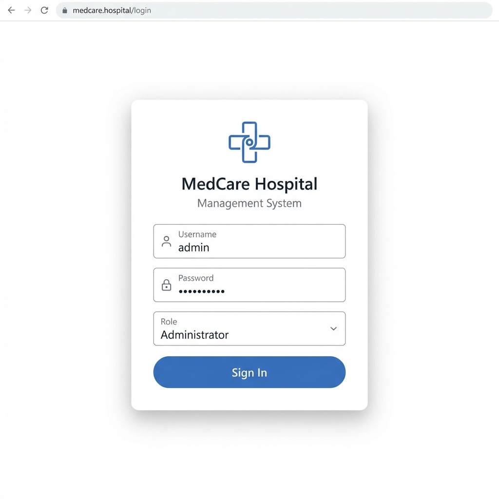
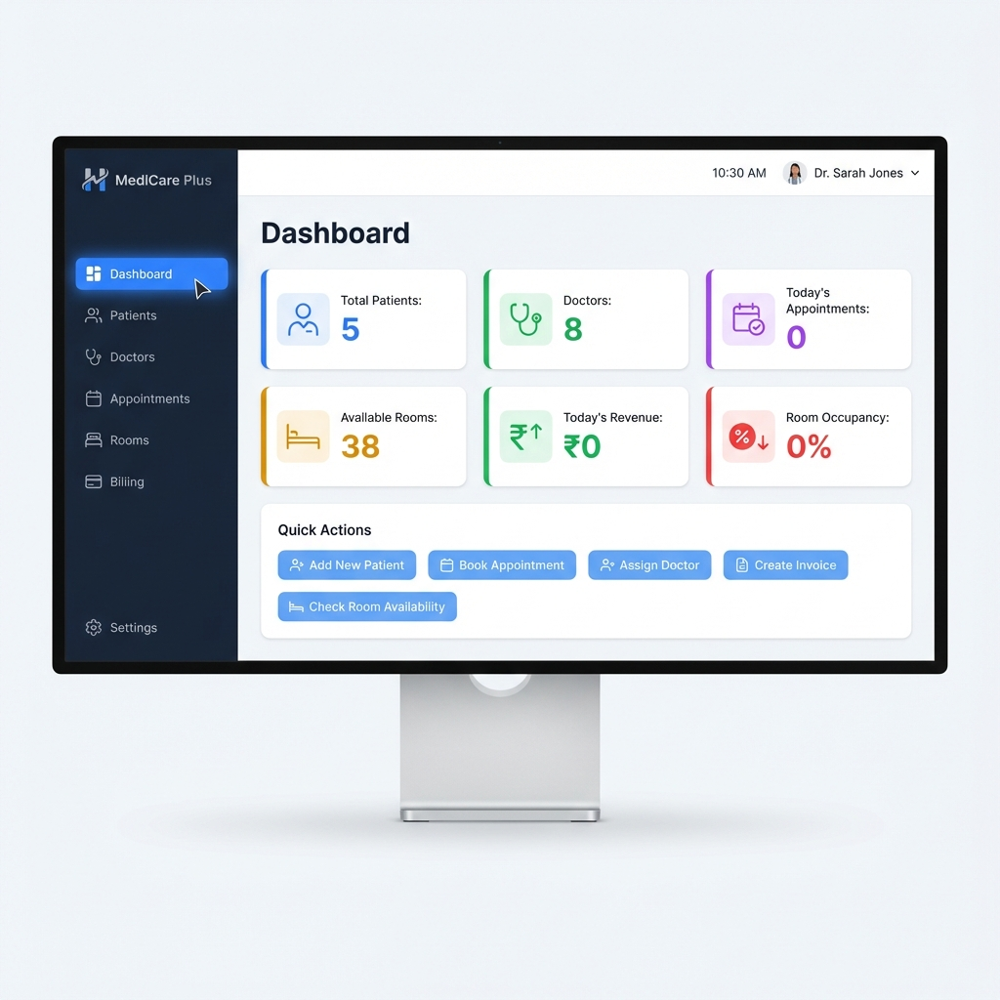
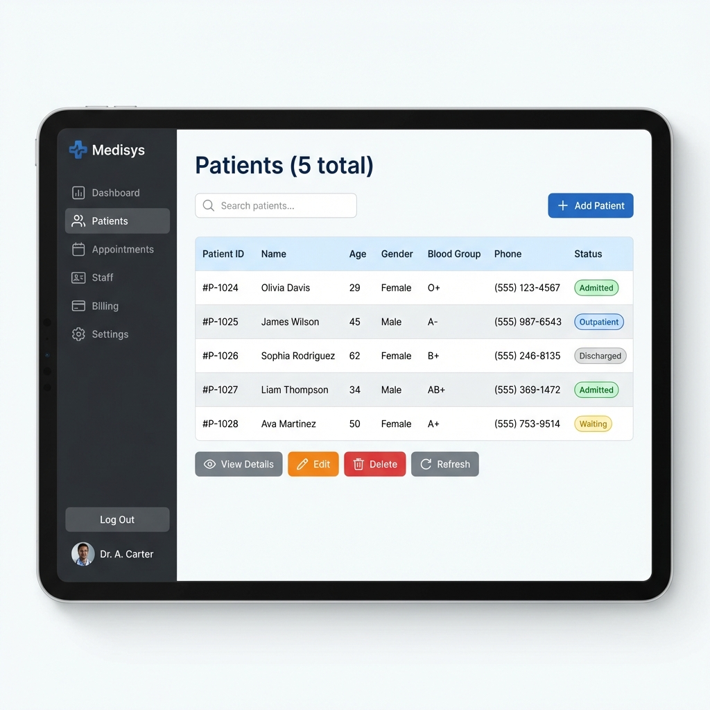
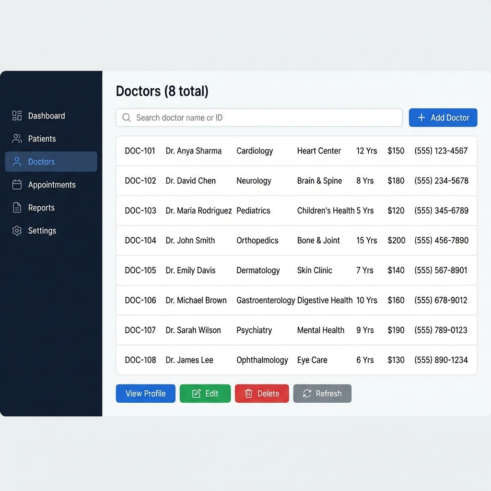
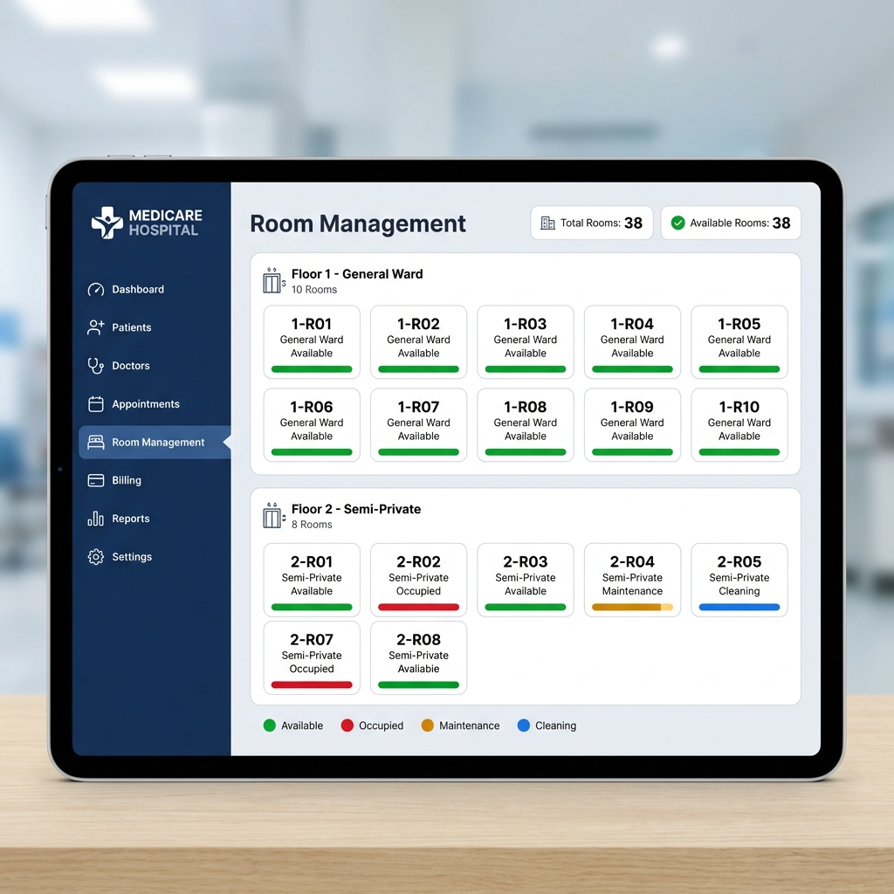
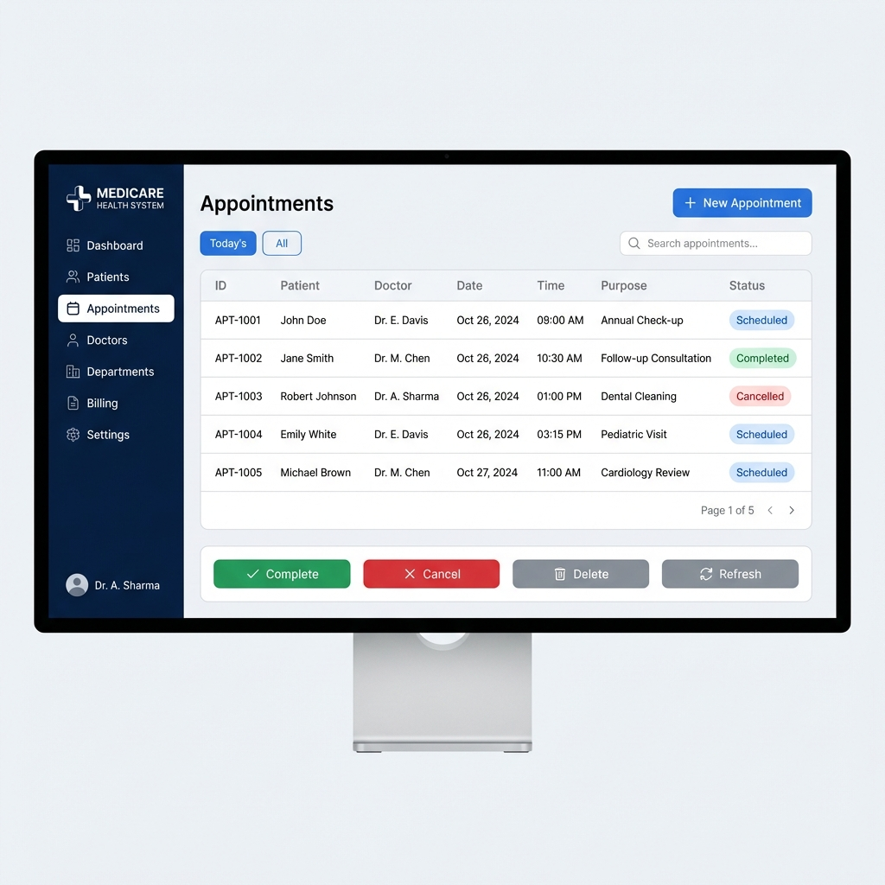
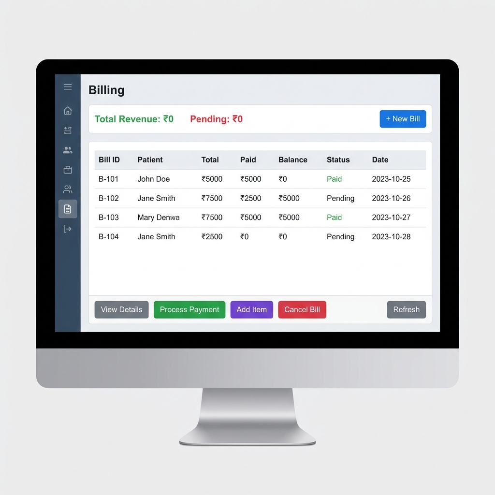

BANGALORE INSTITUTE OF TECHNOLOGY
(Affiliated to Visvesvaraya Technological University, Belagavi)
K.R. Road, V.V. Puram, Bangalore - 560004
DEPARTMENT OF INFORMATION SCIENCE AND ENGINEERING
OBJECT ORIENTED PROGRAMMING WITH JAVA
MINI PROJECT REPORT
On
HOSPITAL MANAGEMENT SYSTEM
Submitted By:
| Sl. No. | Name | USN |
|---|
| 1 | Vignesh B S | 1BI24IS187 |
| 2 | Rohit Maiya M | 1BI24IS131 |
| 3 | Shailesh Nayak | 1BI24IS142 |
| 4 | Shreenivas CS | 1BI25IS414 |
TABLE OF CONTENTS
| 1. Introduction | 3 |
| 2. Objectives | 3 |
| 3. System Requirements | 4 |
| 4. OOP Concepts Used | 4 |
| 5. System Design | 5 |
| 6. Implementation | 6 |
| 7. Screenshots | 10 |
| 8. Conclusion | 15 |
| 9. References | 15 |
1. INTRODUCTION
The Hospital Management System is a comprehensive software application developed using Java programming language that demonstrates the practical implementation of Object-Oriented Programming (OOP) concepts. This system is designed to streamline and automate various hospital operations including patient management, doctor management, appointment scheduling, room allocation, and billing.
In today's digital era, efficient management of healthcare facilities is crucial for providing quality patient care. This project addresses the need for a centralized system that can handle multiple aspects of hospital administration through a user-friendly graphical interface built using Java Swing.
The application follows a modular architecture with clear separation of concerns, making it maintainable and scalable. It demonstrates core OOP principles including Abstraction, Inheritance, Encapsulation, and Polymorphism through well-structured class hierarchies.
2. OBJECTIVES
- To develop a complete Hospital Management System using Java
- To demonstrate practical implementation of OOP concepts:
- Abstraction through abstract classes
- Inheritance through class hierarchies
- Encapsulation through private fields and public methods
- Polymorphism through method overriding
- To create a professional GUI using Java Swing
- To implement data persistence using file handling
- To provide modules for patient, doctor, appointment, room, and billing management
3. SYSTEM REQUIREMENTS
3.1 Hardware Requirements
- Processor: Intel Core i3 or equivalent (minimum)
- RAM: 4 GB (minimum), 8 GB (recommended)
- Storage: 500 MB free disk space
- Display: 1280 x 720 resolution (minimum)
3.2 Software Requirements
- Operating System: Windows 10/11, Linux, or macOS
- Java Development Kit (JDK): Version 8 or higher
- IDE: Any Java IDE (IntelliJ IDEA, Eclipse, NetBeans) - Optional
4. OOP CONCEPTS USED
| Concept | Implementation | Example in Project |
|---|
| Abstraction | Abstract class with abstract methods | Person.java - abstract getRole() method |
| Inheritance | Subclasses extending parent class | Patient, Doctor, Staff extend Person |
| Encapsulation | Private fields with getters/setters | All model classes use private fields |
| Polymorphism | Method overriding in subclasses | getRole() returns different values |
| Composition | Class contains object references | Bill contains BillItem objects |
| Singleton | Single instance pattern | HospitalManager.getInstance() |
5. SYSTEM DESIGN
5.1 Class Hierarchy
Person (Abstract Class)
├── Patient
├── Doctor
└── Staff
HospitalManager (Singleton)
├── PatientManager
├── DoctorManager
├── AppointmentManager
├── BillingManager
└── RoomManager
5.2 Project Structure
Hospital_Management_System/
├── src/
│ ├── Main.java
│ ├── models/
│ │ ├── Person.java (Abstract)
│ │ ├── Patient.java
│ │ ├── Doctor.java
│ │ ├── Staff.java
│ │ ├── Appointment.java
│ │ ├── Bill.java
│ │ ├── Room.java
│ │ ├── Department.java
│ │ └── MedicalRecord.java
│ ├── managers/
│ │ ├── HospitalManager.java
│ │ ├── PatientManager.java
│ │ ├── DoctorManager.java
│ │ ├── AppointmentManager.java
│ │ ├── BillingManager.java
│ │ └── RoomManager.java
│ ├── utils/
│ │ ├── FileHandler.java
│ │ ├── IDGenerator.java
│ │ └── DateUtils.java
│ └── gui/
│ ├── HospitalManagementApp.java
│ ├── LoginPanel.java
│ ├── DashboardPanel.java
│ ├── PatientPanel.java
│ ├── DoctorPanel.java
│ ├── AppointmentPanel.java
│ ├── RoomPanel.java
│ ├── BillingPanel.java
│ └── components/
│ ├── StyledButton.java
│ ├── StyledTable.java
│ ├── StyledTextField.java
│ └── SidebarPanel.java
└── data/ (auto-generated)
6. IMPLEMENTATION
6.1 Abstract Class - Person.java
The Person class demonstrates Abstraction by defining common attributes for all person types and an abstract method that must be implemented by subclasses.
package models;
import java.io.Serializable;
import java.time.LocalDate;
public abstract class Person implements Serializable {
// Private fields - Encapsulation
private String id;
private String name;
private LocalDate dateOfBirth;
private String gender;
private String phone;
private String email;
private String address;
// Abstract method - Abstraction
public abstract String getRole();
// Getters and Setters
public String getId() { return id; }
public void setId(String id) { this.id = id; }
public String getName() { return name; }
public void setName(String name) { this.name = name; }
// ... more getters and setters
}
6.2 Inheritance - Patient.java
The Patient class demonstrates Inheritance by extending Person and Polymorphism by overriding the getRole() method.
package models;
import java.time.LocalDate;
import java.util.ArrayList;
import java.util.List;
public class Patient extends Person {
private String patientId;
private String bloodGroup;
private LocalDate admissionDate;
private List<String> medicalHistory;
private String assignedDoctorId;
private String roomNumber;
private boolean isAdmitted;
// Polymorphism - Different implementation
@Override
public String getRole() {
return "Patient";
}
public void admit(String roomNumber, String doctorId) {
this.isAdmitted = true;
this.roomNumber = roomNumber;
this.assignedDoctorId = doctorId;
this.admissionDate = LocalDate.now();
}
public void discharge() {
this.isAdmitted = false;
this.roomNumber = null;
}
}
6.3 Singleton Pattern - HospitalManager.java
The HospitalManager class implements the Singleton Design Pattern ensuring only one instance manages the entire system.
package managers;
public class HospitalManager {
// Single instance
private static HospitalManager instance;
// Sub-managers
private PatientManager patientManager;
private DoctorManager doctorManager;
private AppointmentManager appointmentManager;
private BillingManager billingManager;
private RoomManager roomManager;
// Private constructor
private HospitalManager() {
initializeManagers();
}
// Synchronized getInstance method
public static synchronized HospitalManager getInstance() {
if (instance == null) {
instance = new HospitalManager();
}
return instance;
}
private void initializeManagers() {
this.patientManager = new PatientManager();
this.doctorManager = new DoctorManager();
this.appointmentManager = new AppointmentManager();
this.billingManager = new BillingManager();
this.roomManager = new RoomManager();
}
}
6.4 Composition - Bill.java
The Bill class demonstrates Composition by containing a list of BillItem objects.
package models;
import java.util.ArrayList;
import java.util.List;
public class Bill implements Serializable {
private String billId;
private String patientId;
private List<BillItem> items; // Composition
private double totalAmount;
private BillStatus status;
// Nested class
public static class BillItem implements Serializable {
private String description;
private int quantity;
private double unitPrice;
private double amount;
public BillItem(String desc, String cat, int qty, double price) {
this.description = desc;
this.quantity = qty;
this.unitPrice = price;
this.amount = qty * price;
}
}
public void addItem(BillItem item) {
items.add(item);
calculateTotal();
}
public void calculateTotal() {
totalAmount = items.stream()
.mapToDouble(BillItem::getAmount).sum();
}
}
7. SCREENSHOTS
7.1 Login Screen
The login screen provides role-based authentication with a clean, modern interface.

Figure 1: Hospital Management System Login Screen
7.2 Dashboard
The dashboard displays real-time statistics including patient count, doctor count, appointments, room availability, and revenue.

Figure 2: System Dashboard with Statistics
7.3 Patient Management
The patient panel allows adding, viewing, editing, and deleting patient records with search functionality.

Figure 3: Patient Management Interface
7.4 Doctor Management
The doctor panel displays all doctors with their specializations, departments, and consultation fees.

Figure 4: Doctor Management Interface
7.5 Room Management
The room panel shows a visual grid of all rooms organized by floor with color-coded status indicators.

Figure 5: Room Management with Visual Grid
7.6 Appointment Scheduling
The appointment panel enables scheduling, viewing, and managing patient appointments.

Figure 6: Appointment Scheduling Interface
7.7 Billing System
The billing panel allows generating bills, adding items, and processing payments.

Figure 7: Billing Management Interface
8. CONCLUSION
The Hospital Management System project successfully demonstrates the practical implementation of Object-Oriented Programming concepts in Java. Through this project, we have:
- Implemented Abstraction using the abstract Person class with abstract methods
- Demonstrated Inheritance through Patient, Doctor, and Staff classes extending Person
- Applied Encapsulation by using private fields with public getters and setters
- Showcased Polymorphism through method overriding in subclasses
- Utilized Composition in the Bill class containing BillItem objects
- Implemented the Singleton Pattern in HospitalManager
The project provides a functional hospital management solution with features for managing patients, doctors, appointments, rooms, and billing through an intuitive graphical user interface.
Future Enhancements
- Database integration for persistent storage
- Report generation and printing functionality
- Multi-user authentication system
- Integration with external medical systems
9. REFERENCES
- Herbert Schildt, "Java: The Complete Reference", 11th Edition, McGraw-Hill Education
- Oracle Java Documentation - https://docs.oracle.com/javase/
- Java Swing Tutorial - https://docs.oracle.com/javase/tutorial/uiswing/
- Design Patterns: Elements of Reusable Object-Oriented Software - Gang of Four